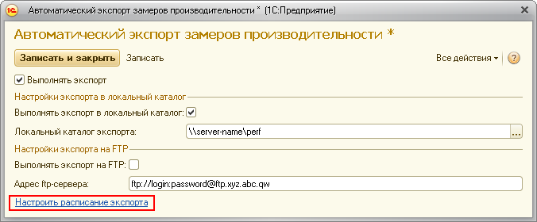

Это сообщение означает, что каталог, в котором ЦКК пытается искать данные с результатами оценки производительности, пуст. Первое, что нужно проверить, это используется ли каталог, указанный в поле "Каталог файлов оценки производительности", для экспорта данных исследуемой информационной базой.
Далее следует убедиться, что экспорт данных в контролируемой информационной базе включён. В исследуемой информационной базе нужно, чтобы были установлены в значение Истина константа "Выполнять замеры производительности" и в форме "Автоматический экспорт замеров производительности" опция "Выполнять экспорт".
Также следует удостовериться, что период экспорта данных в контролируемой информационной базе не больше, чем период запусков контрольной процедуры.
